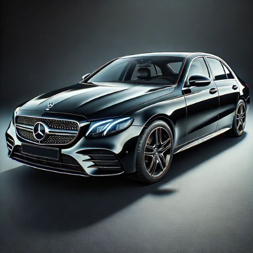
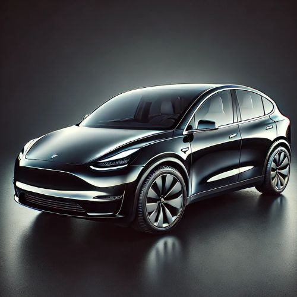
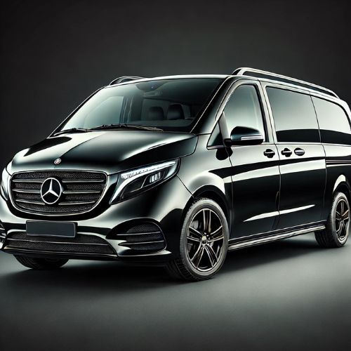

Nos Véhicules
Nous proposons une flotte variée, adaptée à tous vos besoins, qu'il s'agisse de déplacements privés ou professionnels.
Berline
Nos berlines offrent un confort et une élégance incomparables pour vos déplacements en solo ou à deux.
SUV
Idéal pour les groupes ou les familles, nos SUV allient espace et confort pour un voyage agréable.
Van
Pour les déplacements en groupe ou les voyages avec bagages, nos vans offrent un maximum d’espace et de commodité.
Offrez-vous l'excellence
Nous nous engageons à offrir un service de transport de qualité, assuré par une équipe de chauffeurs expérimentés et dévoués. Nos chauffeurs sont soigneusement sélectionnés pour leur expertise, leur sérieux, et leur capacité à répondre aux attentes de chaque client avec courtoisie et discrétion.
Fortement investis dans leur métier, nos chauffeurs sont ponctuels et possèdent une excellente connaissance de la région lyonnaise et de ses environs, leur permettant de choisir les meilleurs itinéraires pour chaque trajet. Attentifs aux détails, ils veillent à ce que chaque client voyage dans des conditions de confort et de sécurité optimales, avec un accueil chaleureux et personnalisé.
Nous accordons une grande importance à la formation continue de nos chauffeurs pour garantir un service en accord avec les plus hauts standards de qualité. Chaque chauffeur de notre équipe fait preuve d'une grande capacité d'adaptation et d'une flexibilité exemplaire, pour s'adapter aux besoins de nos clients, qu'il s'agisse de déplacements d'affaires, de transferts vers des événements, ou de voyages privés.
En choisissant Chauffeur Privé, vous optez pour une équipe de chauffeurs professionnels, rigoureux et dédiés à offrir une expérience de transport agréable et sereine, à chaque trajet.